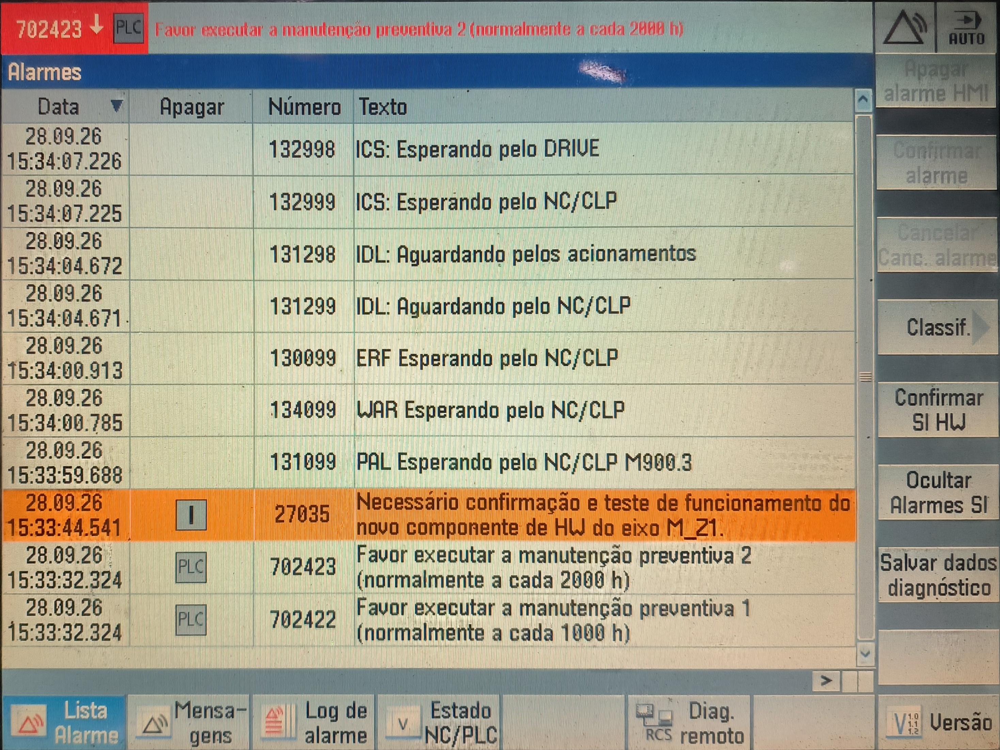
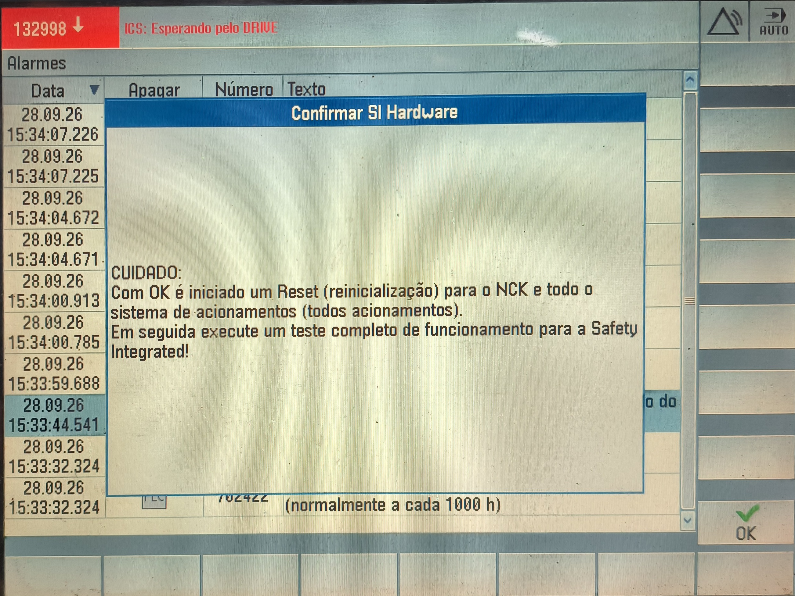
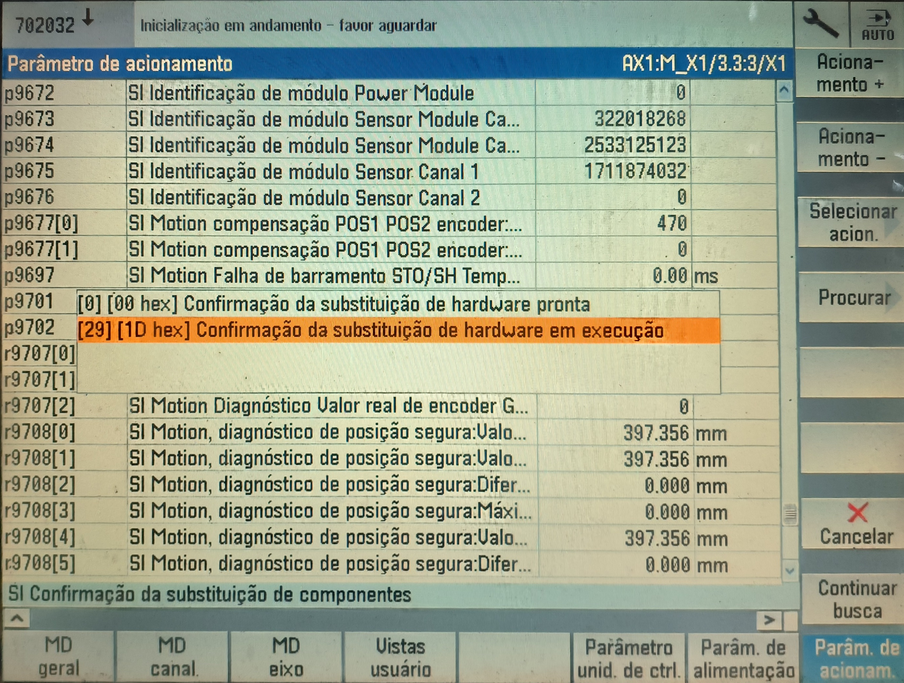
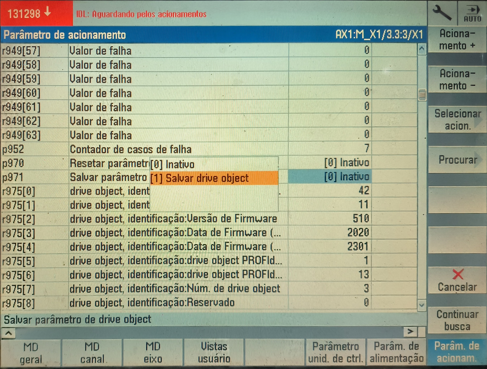

Passo 1
Acesso à Lista de Alarme
Pressionar a tecla Menu select, e as softkeys Diagnostico > Lista de Alarme.
Passo 2
Confirmar Alarmes SI
Selecionar a mensagem de alarme 27035 e pressionar a softkey Confirmar Alarmes SI.

Passo 3
Confirmação do Hardware
Pressionar em OK para confirmar.

Passo 4
Autenticação (Senha)
Pressionar a tecla Menu select, e as softkeys Colocação em funcionamento > Senha, definir a senha SUNRISE e confirmar em OK.
Passo 5
Parâmetro de Acionamento p9702
Pressionar a softkey dados de máquina > Parâmetros de acionamento, ir até o parâmetro p9702 e selecionar a opção [29][1D hex] Confirmação da substituição de hardware em execução, pressionar input para confirmar.

Passo 6
Salvar Drive Object p971
Ir até o parâmetro p971 e selecionar a opção [1] Salvar drive object, pressionar input para confirmar.

Passo 7
Reset
Pressionar a tecla [^] e realizar um RESET[PO].
Passo 8
Verificação Final
Verificar se o alarme 27035 saiu da lista de alarmes.